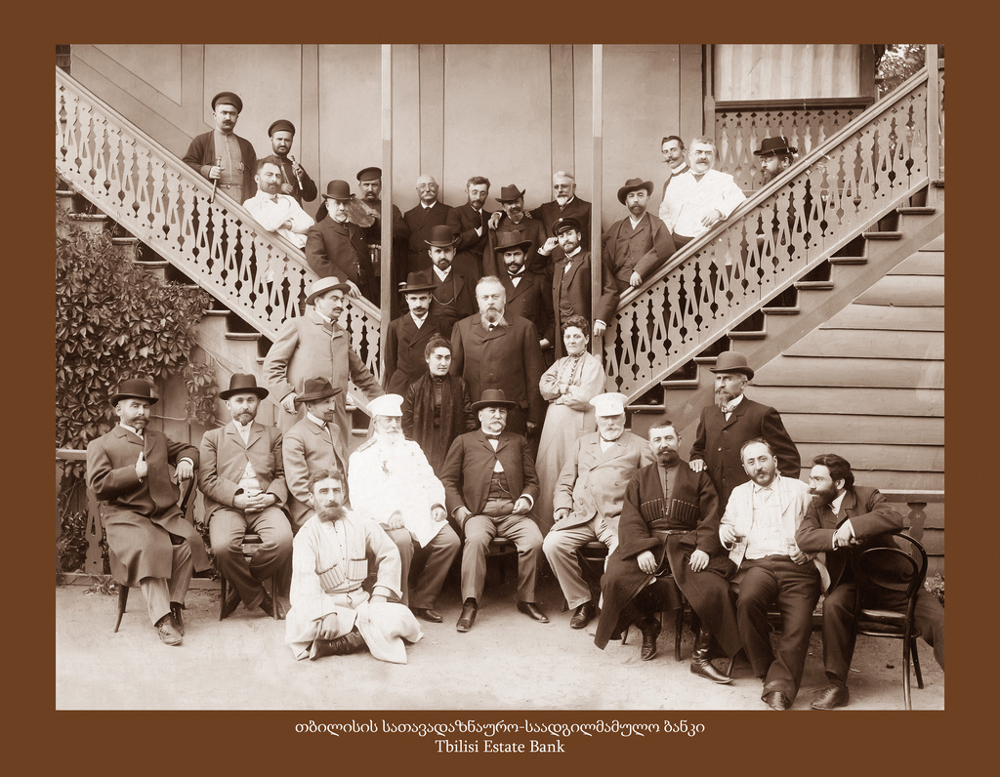
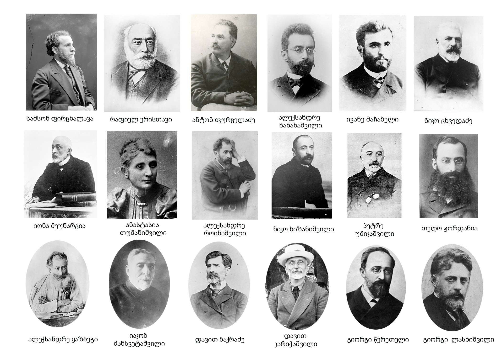
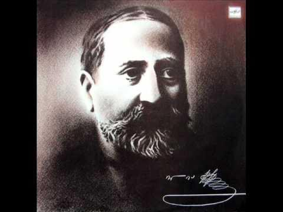

სახალხო ბანკის დაარსება
1874 წელს ილიამ დააარსა ქართული სახალხო ბანკი, რომელიც ფინანსურ მხარდაჭერას უწევდა ქართველ გლეხებს და ვაჭრებს.

გაზეთი „ივერია“
ილიამ 1877 წელს დააარსა გაზეთი „ივერია“, რომელიც ეროვნული თვითშეგნების გაღვივებას და ქართული ენის დაცვას ემსახურებოდა.

„საზოგადოება წერა-კითხვის გამავრცელებელი“
ილიას ხელმძღვანელობით შეიქმნა „ქართველთა შორის წერა-კითხვის გამავრცელებელი საზოგადოება“, რომელიც განათლებას ავრცელებდა საქართველოს სოფლებში.

პოლიტიკური საქმიანობა
ილია იყო საქართველოს ეროვნულ-ლიბერალური მოძრაობის ლიდერი და აქტიურად მონაწილეობდა ქვეყნის პოლიტიკური ცხოვრების განვითარებაში.